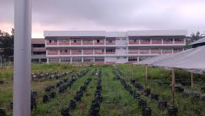
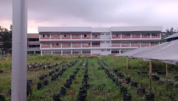
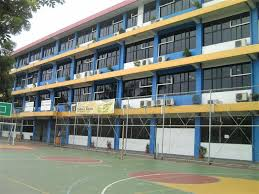

Gokma Simarmata lahir di Medan pada tanggal 15 Juni 1975.
Lalu dia pergi ke SMA Negeri 8 Medan
 

Setelah dia menyelesaikan SMA, dia belajar di Fakultas Pertanian USU.
Lalu dia pergi dan tinggal di Jakarta untuk mengajar di SMPK 7 Penabur sebagai guru Matematika
Dia juga dianggap sebagai content creator pada facebook (dan kadang kadang juga tiktok)